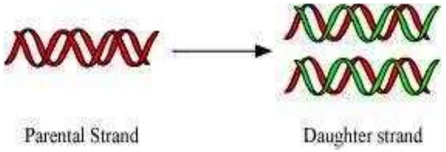
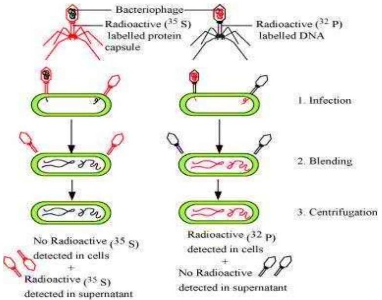
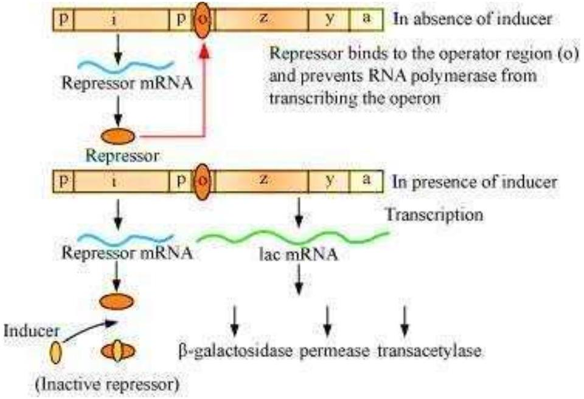
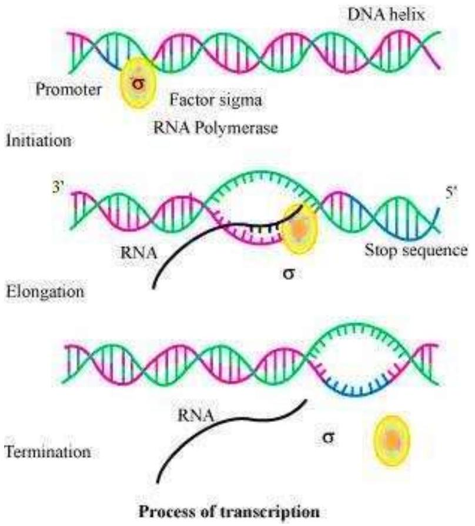
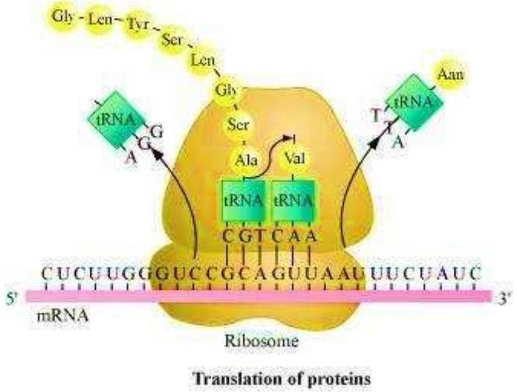

Group the following as nitrogenous bases and nucleosides: Adenine, Cytidine, Thymine, Guanosine, Uracil and Cytosine.
If a double stranded DNA has 20 per cent of cytosine, calculate the per cent of adenine in the DNA.
If the sequence of one strand of DNA is written as follows:
5'-ATGCATGCATGCATGCATGCATGCATGC-3'
Write down the sequence of complementary strand in 5′ → 3′ direction.
If the sequence of the coding strand in a transcription unit is written as follows:
5'-ATGCATGCATGCATGCATGCATGCATGC-3'
Write down the sequence of mRNA.
Which property of DNA double helix led Watson and Crick to hypothesise semi-conservative mode of DNA replication? Explain.

Depending upon the chemical nature of the template (DNA or RNA) and the nature of nucleic acids synthesised from it (DNA or RNA), list the types of nucleic acid polymerases.
How did Hershey and Chase differentiate between DNA and protein in their experiment while proving that DNA is the genetic material?

Differentiate between the followings:
Repetitive DNA and Satellite DNA
| Repetitive DNA | Satellite DNA | |
|---|---|---|
| 1. | Repetitive DNA are DNA sequences that contain small segments, which are repeated many times. | Satellite DNA are DNA sequences that contain highly repetitive DNA. |
mRNA and tRNA
| mRNA | tRNA | |
|---|---|---|
| 1. | mRNA or messenger RNA acts as a template for the process of translation. | tRNA or transfer RNA acts as an adaptor molecule that carries a specific amino acid to mRNA for the synthesis of polypeptide. |
| 2. | It is a linear molecule. | It has clover leaf shape. |
Template strand and Coding strand
| Template strand | Coding strand | |
|---|---|---|
| 1. | Template strand of DNA acts as a template for the synthesis of mRNA during transcription. | Coding strand is a sequence of DNA that has the same base sequence as that of mRNA (except thymine that is replaced by uracil in RNA). |
| 2. | It runs from 3' to 5'. | It runs from 5'to 3'. |
List two essential roles of ribosome during translation.
In the medium where E. coli was growing, lactose was added, which induced the lac operon.
Then, why does lac operon shut down some time after addition of lactose in the medium?

Explain (in one or two lines) the function of the followings:
Promoter
tRNA
Exons
Why is the Human Genome project called a mega project?
What is DNA fingerprinting? Mention its application.
Briefly describe the following:
Transcription

Polymorphism
Translation

Bioinformatics